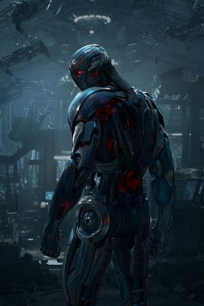
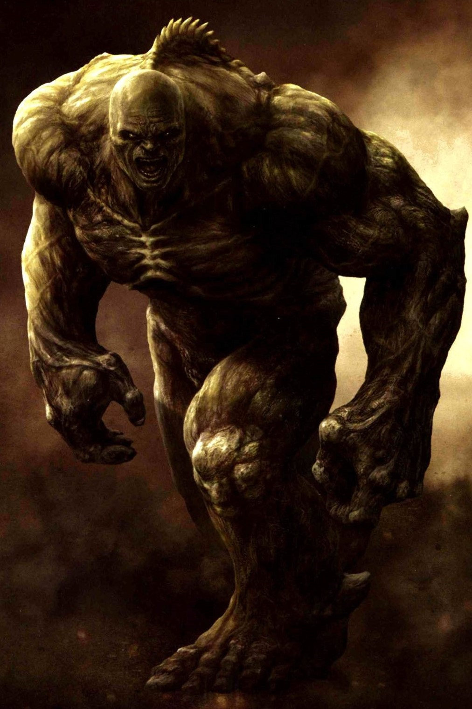
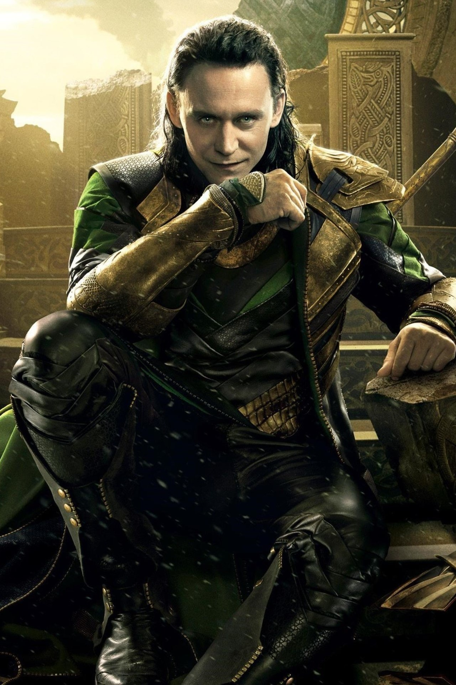
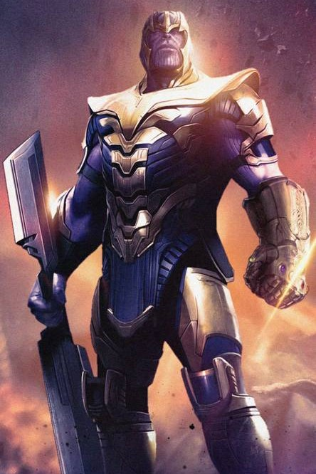

Marvels




Tony Stark initially sees Ultron as a form of A.I. that could keep peace on a global scale, essentially acting as a suit of armor around the whole world, protecting it from large scale threats like the Chitauri. However, he is unable to complete it until he discovers a living computer system inside of Loki's Scepter. Working in secret with Bruce Banner, Stark uses this newly discovered artificial intelligence to finish his defense program. When Ultron wakes up, though, he finds his creators lacking. He instantly makes moves to wipe the Avengers—and most of humanity—off the map, to evolve life on the planet to the next step